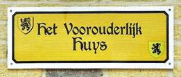
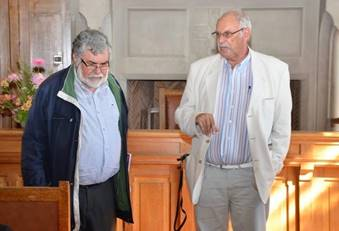

Bijdragen over:
|
Hernieuwen ledenbijdrage voor 2016
Mocht u – tot
nog toe nagelaten hebben uw bijdrage te vereffenen, dan kan
dit alsnog en dit bij voorkeur gebruik van ons ‘Belgische’
zogenaamd ‘Europees’ rekeningnummer iban BE13 4648 2202
5139 – bic:
KREDBEBB BE, waarvan
de rekeningoverzichten ons dagelijks meegedeeld worden. U
krijgt dan het jaarboek De Nederlanden ‘extra muros’ 38 (2016)
alsnog tegen de leden-prijs van 29 € toegestuurd.
EUVO (EUropa
der VOlkeren)
werd opgericht door de E.H. Luc Vranckx (Antwerpen 10 juli
1931-Varsenare 8 mei 2014) in 1984.
Vanaf de oprichting was het doel
bij uitstek het Vlaamse karakter van de Franse Westhoek te
bewaren en te bevorderen.
In het gezegende jaar 2014 stond
de teller van het aantal geplaatste borden op meer dan 750.
Elk jaar worden er een 40-tal nieuwe borden geplaatst.
Oude borden die de tand des tijds
niet overleven, worden op eenvoudig verzoek vervangen. Naast
het bord ontvangen de bewoners een Leeuwenvlag en een
tweetalig perkament met daarop de tekst die wordt gelezen
voor het huis n.a.v. de onthulling. Borden met Vlaemsche of
Nederlandse tekst wordt aangebracht op huizen, boerderijen,
afspanningen, kerken kapelletjes en gemeentehuizen.
Contacteer ons indien u een
EUVO-bord wenst te plaatsen of te sponsoren. Is een bord
verdwenen of onleesbaar laat het ons weten. Neem daartoe
contact op met Karel Appelmans, 06 18 22 49 57
karel.appelmans@gmail.com of met Mark Ingelaere 32 477 19 13
05 tisjetasje1853@gmail.com
LIHF – L’Info(rmation) Histoire de Flandre
C’est un lieu ouvert
à tous eu qui s’intéressent à l’histoire de la Flandre,
q’elle soit française, belge ou zélandaise. Tout un chacun y
trouvera:
o Plussieurs
centaines d’ouvrages et doument à consulter, répartis en 30
thèmes majeurs.
o Une
exposition permettant de déouvrir l’histoire de la Flandre.
o Un
ensemble de données consultables sur disque dur.
o Un
conseiller historique au service du public.
o Des
conférences et expositions poncttuelles par des spéialistes
volontaires agrées par le comité sientifique du LIHF.
o Un
lieu de réunion de travail utilisable sur demande, par des
sociétés actives en matière d’histoire et de patrimoine de
la Flandre.
o À
terme une structure organisatrice de découverte de lieu
emblématique du
patrimoine flamand de France, Belgique ou Zélande.
Renseignements
pratiques cette structure gérée par le CHAB (Cercle
d’Histoire et d’Archéologie de Bailleul), et installé dans
des locaux communaux, se présente comme suit:
o Lieu:
1, rue Pharaon de Winter, au rond-point où est situé le
monument britannique 14-18, au départ de la route de
Méreren-Cassel.
o Jours
et heures d’ouverture: mardi, mercredi, jeudi, de 10h à 13h
et de 14h à 17h, ainsi sur rendez-vous pour les groupes et
associations, et nocturne le mercredi jusqu’à 20h.
o Contact:
+336 11 51 57 03, ericvanneufville@aol.fr
Cyriel Moeyaert
& Mark Ingelaere
o De Vlaamse leeuw is terug op het stadhuis
van Belle. Er zijn nieuwe toeristische panelen over de
wederopbouw van de stad, uitleg in het Frans, Engels, Duits
en Nederlands.
o Ongeveer
560 Franse leerlingen volgen school in Belgisch Vlaanderen.
Tijdens het schooljaar 2014-15 volgden 141 Franse kinderen
les in het Vlaamse kleuteronderwijs, 235 in het Vlaamse
lager onderwijs en 186 in het Vlaamse secundair onderwijs.
Globaal genomen is er een stijging Ten opzichte van 5 jaar
geleden, zeker in het lager onderwijs.
o Op
15 augustus hebben de bewoners van Ghyvelde en Adinkerke
verbroederd met een wandeling, drank en dans. De
burgemeesters van de grensgemeentes, Ann Vanheste van De
Panne en Jean Decool van Ghyvelde, benadrukken in hun speech
de vriendschap tussen de bevolking van de twee
grensgemeentes.
o Er
is een plan om de molens van Frans-Vlaanderen te erkennen
als UNESCO-werelderfgoed.
o Mark
Ingelaere zoekt geregeld Vlaams sprekende Frans-Vlamingen op
en probeert van hun gesprek een kort filmpje te maken. Die
opnames zijn bijzonder waardevol omdat het gaat over een
uitstervende taal, dat zal maar veel later beseft worden. De
filmpjes zijn te zien op volgend YouTube kanaal: https://www.youtube.com/ channel/UCdrj4xaIvZ3ekOmmM5dD8uQ
o De
vereniging EUVO (zie ook hierboven) werkt naarstig verder en
staat goed aangeschreven bij de Frans-Vlamingen. Er is veel
vraag naar nieuwe borden, intussen worden er ook oude borden
vervangen. Mede dank zij EUVO wordt het Vlaamse karakter van
de Franse Westhoek bewaard en bevorderd.
o Binnenkort start
het nieuwe werkjaar van het Davidsfonds Frans-Vlaanderen.
Ook het Davidsfonds Frans-Vlaanderen zet zich in voor het
behoud, de verspreiding en de verdediging van de Vlaamse
cultuur en Nederlandse taal in Frans-Vlaanderen. Informatie
bij de secretaris: gijs.van.ryckeghem@skynet.be
o Ons tweede Nieuw Oud Vlaams
is verschenen als bijlage bij het nieuwste jaarboek van
Zannekin De
Nederlanden “extra muros”. Het is apart te verkrijgen
bij Zannekin of bij Cyriel Moeyaert. Ook in het Huis van de
Peneslag in Noordpene is het voorradig.
o Onze vriendin
Denise Becue is overleden. Dat is heel jammer, ze sprak een
schitterend Frans-Vlaams. Ze verzorgde tot op het eind haar
mooie tuin, ze ging elk jaar naar Lourdes. Ze was
huishoudster geweest bij de Vlaamssprekende pastoor Defoort
in Sint-Janskappel. Hij was ook van Krochte. Ze woonde in
Krochte langs de Romeinse heerweg en had een EUVO-bordje met
de wijknaam erop Den Iepe, naast een Vlaamse kapel die ze
dagelijks bezocht. Ze is in Krochte begraven.
o Metselaar Marcel
Depauw van Nieuw Koudekerke, een goede, vlot Vlaams
sprekende vriend, is ons ook ontvallen. ’t Is heel jammer en
verdrietig: we hebben hem de eerste keer ontmoet in
Kapellebroek: een verrassende en verblijdende ontmoeting.
Hij kon boeiend vertellen over z’n strenge vader die hem
hielp om z’n handicap te overwinnen.
o We lezen in de Nieuwsbrief Stichting
Taalverdediging dat Google op de kaart van Wallonië de
plaatsnamen in het Nederlands voorkomen, en ook in
Frans-Vlaanderen, b.v. Rijsel en Duinkerke. Kan iemand
nakijken of ook Belle, Sint-Winoksbergen, Broekburg en
Sint-Omaars in dit geluk delen?
o Op 19 tot 21
augustus kregen we weer het Zannekin-feest in Rekspoede,
waarvan in het Frans gezegd wordt: “c’est un réenraci-nement
de l’identité flamande”. Hoopvol en hartverwarmend.
o Op 25 juni werd
het mooie bord met een Nederlandse aanroeping weer plechtig
aangebracht en ingezegend onder het calvariekruis in
Ochtezele. Kort tevoren werd het na herstel vriendelijk
overhandigd aan Karel Appelmans door het VTI van Lokeren. We
kunnen die mensen niet dankbaar genoeg zijn. Ook Karel
Appelmans verdient een proficiat. Een Nederlands grafkruis
van een vrouwmoeder op het kerkhof van Ochtezele, zal na de
nodige zorg eraan door Mark Ingelaere, weer op z’n oude
plaats geplant worden
o Wido Bourel -
die over Lodewijk de Baecker een schitterend boekje
geschreven heeft - bracht ons op 23 april een fijne
spreekbeurt bij z’n graf in Noordpene, nadat het keurig
hersteld werd op zijn initiatief. We mogen hem hiermee
gelukwensen. Lodewijk de Baecker is echt een grote van ons
volk als historicus en taalkundige. Hij beschouwde nog de
Nederlanden als een eenheid en het Nederlands ook de taal
van Frans-Vlaanderen. Wido’s hulde viel te lezen in onze
vorige Nieuwsbrief.
o Frank Allacker
van Broekburg heeft ontdekt dat het Meethof in Broekburg het
buitenhuis was van Edmond de Coussemaker. Hij vroeg ons naar
de etymologie van Meethof. Meet zoals in Meet-kerke betekent
‘weiland’.
o Jacques Fermaut
kent het Frans-Vlaamse woord voor ‘vrijster’ of verloofde,
namelijk ‘motresse’. Maar hoe heet de mannelijke verloofde
in het Frans-Vlaams? Ik wist het niet. Volgens Jacques heet
die ‘sjaai’. Ze heeft een sjaai. Dat staat niet in onze
woordenboeken terwijl motresse er wel in voorkomt. Nog geen
etymologie ervan gevonden. Bedankt, Jacques.
De Nederlanden, een verhaal van gemiste kansen
Jan
Verhaverbeke, Edegem
Als je
de geschiedenis bekijkt, dan sta je eerder verwonderd over
het feit dat die sterke Heel-Nederlandse staat er niet is
gekomen: hij kreeg herhaalde kansen. De politiek van Filips
II (1527-1598) zit er zeker voor veel tussen, maar hij was
beslist niet de enige die uiteindelijk de vorming van een
machtig Nederlands rijk heeft verhinderd. Ook het optreden
van de Oranje’s was niet altijd even gelukkig, achteraf
gezien dan toch.
Opbouw
van de Nederlanden in de 15e eeuw
In de
15e eeuw had vooral de Bourgondische hertog Filips de Goede
(1396-1467) geduldig de bouwstenen bijeengebracht van een
stevig middenrijk tussen het Franse en het Duitse. Tevens
had hij behendig een centraal gezag uitgebouwd terwijl hij
de steden en de adel toch voldoende macht en vooral
machtsillusie liet. Zijn zoon en opvolger Karel de Stoute
(1433-1477) beschikte helaas niet over de diplomatieke
talenten van zijn vader. Zijn steile ambities en zijn
drieste optreden maakten dat hij overal zijn krediet
verspeelde en naast de begeerde koningskroon greep Hij stond
wellicht ook onder sterkere druk want hij kreeg maar geen
mannelijke erfgenaam. Dat hing als een molensteen rond de
hals van Karel de Stoute want de Franse koning Jan II had
destijds het hertogdom Bourgondië aan zijn vierde zoon
Filips de Stoute in apanage gegeven en dat ging telkens
verder op de mannelijke lijn. Toen de
gevreesde en gehate heerser in 1477 sneuvelde en zijn
20-jarige dochter Maria van Bourgondië als enige erfgename
achterliet, begon het Bourgondische rijk te wankelen. De
steden eisten prompt hun vrijheden weer en de Franse koning
scheurde het hertogdom Bourgondië los. Door het huwelijk van
Maria met de Habsburger Maximiliaan van Oostenrijk nog in
datzelfde jaar 1477 werden de Nederlanden gered maar
uiteindelijk ging het stamland Bourgondië verloren.
De 16e
eeuw is die van Karel V en Filips II. Ze hield aanvankelijk
veel beloften in voor de Nederlanden maar eindigde
dramatisch. Een verhaal van gemiste kansen. Karel V
(1500-1558) zette de kroon op het werk dat zijn voorgangers
waren begonnen. Hij verenigde de Zeventien Provinciën
van Friesland en Groningen tot Artesië en Picardië. Met de
pragmatieke sanctie van 1549, bekrachtigd door de
Provinciale Staten, werden de Nederlanden voortaan een
ondeelbaar geheel. In datzelfde jaar 1549 volgde zijn zoon
Filips II (1527-1598) hem op in de Nederlanden. Zowel Karel
als Filips zagen het als hun heilige taak een grote centraal
gedirigeerde katholieke staat tot stand te brengen, maar de
gelijkenis tussen beiden houdt daar ongeveer op. Karel was in
Gent geboren en vooral in Mechelen opgegroeid in de
Bourgondische hoftraditie. In vele opzichten was hij een
Nederlander. Zijn zoon was aan het strenge Spaanse hof
opgevoed in de Spaanse tradities. Filips was een Spanjaard,
een vreemde, zonder gevoeligheid voor wat in de Nederlanden
leefde.
Karel
was op zich geen minder absoluut heerser dan zijn zoon, maar
hij ging veel meer diplomatisch te werk en hij schuwde geen
slinkse middelen om zijn doel te bereiken. Filips, van
nature een twijfelaar, was op zijn manier heel eerlijk en
rechtlijnig. Hij had een groot plichtsgevoel en wilde alles
zelf regelen, tot de kleinste details. Zo was hij onder meer
een nachtmerrie voor de bouwers van het Escoriaal. Zijn
onevenwichtige zoon Don Carlos, die aan een tragisch einde
zou komen, maakte ophef met een “boekje” over zijn vader vol
bijtende ironie “De grote en bewonderenswaardige reizen van
koning Filips”. Op de eerste bladzijde stond: “Van Madrid
naar het Prado, van het Prado naar het Escoriaal, van het
Escoriaal naar Aranjuez, van Aranjuez naar Segovia en van
Segovia naar Madrid”. De andere bladzijden waren blanco…
Karel
en Filips heersten over een wereldrijk maar Karel moest
rekening houden met sterke buitenlandse tegenspelers. De
Franse koning Frans I en de Engelse Hendrik VIII waren uit
hetzelfde hout als de Habsburger gesneden. Karel had er dus
belang bij de Nederlandse steden en staten te ontzien, al
aarzelde hij niet om zijn geboortestad zwaar aan te pakken.
Filips had althans tijdens zijn eerste regeerperiode veel
minder buitenlands weerwerk want Frankrijk was door
innerlijke twisten verscheurd.
Een
groot verschil ten slotte was de “ketterij” waarmee beiden
te maken kregen. Onder Karel kwam het Lutheranisme op maar
Filips had vooral af te rekenen met het calvinisme. Dat
wordt vaak in eenzelfde “protestantse” zak gestopt. Nochtans
is er een groot verschil tussen beide. Luther keert
zich o.m. tegen het supranationaal gezag van de paus en heft
de kloosters op, maar hij raakt niet aan het gezag zelf,
integendeel. Eigenlijk is dat veel vorsten welgevallig. De
macht van Rome en de kloosters breken, speelt eerder in hun
kaart.
Calvijn
daarentegen
erkent geen enkel werelds gezag. Een heerser die het
calvinisme steunt, zaagt eigenlijk de poten van onder zijn
eigen troon.
De Beeldenstorm
van 1566 was het werk van calvinisten, die vooral aanhang
vonden bij de lagere middenklasse en de ambachten. Die
mensen waren het ergst getroffen door de achteruitgang van
de economie te wijten aan de geldverslindende oorlogen die
vooral Karel V voerde. De Beeldenstorm ligt aan de basis van
het drama dat zich zal afspelen en dat zo vermijdbaar was. In Madrid werd
al lang argwanend gekeken naar de ontwikkelingen in de
Nederlanden. Aan het hof waren er twee partijen die we met
moderne termen als “haviken” en “duiven” kunnen betitelen.
Alva
(1507-1582) was een onverschrokken soldaat, een groot
veldheer en een onvoorwaardelijk dienaar van zijn vorst. Hij
was niet zomaar een houwdegen. Hij had een degelijke
humanistische opvoeding genoten. Zijn kasteel te Alba de
Tormes in Oud-Castillië was een trefpunt van kunstenaars en
grote geesten. Als hij de opdracht van Filips aanvaardde was
hij 60, een oud man die slechts met veel moeite in het zadel
zat, maar met een ijzeren wil zijn troepen leidde.
Als
hij in de Nederlanden aankwam was zijn taak eigenlijk al
gedaan. De inlandse edelen inclusief Willem van Oranje
(1533-1584) hadden de orde hersteld. Maar Alva wou eens en
voorgoed komaf maken met alle ongeregeldheden. Hij richtte
de Raad van Beroerte op, spoedig bloed-raad genoemd. Onder
meer Egmont en Hoorne werden gehalsrecht en dat onder
miskenning van het recht dat zij als Vliesridders hadden om
uitsluitend door de Orde te worden berecht. Bovendien voerde
Alva de nieuwe richtlijnen van het concilie van Trente uit
en reorganiseerde de kerkelijke overheid. Door het harde
optreden van Alva groeide het ongenoegen tegen Spanje en
werd de godsdienstkloof groter.
In
1568 viel Willem van Oranje vanuit Duitsland met een
huurlingenleger de Nederlanden binnen. Enerzijds was dat een
goed moment omwille van de onvrede tegen Alva en Spanje.
Oranje rekende dus op de sympathie van de bevolking.
Anderzijds had hij geen slechter moment kunnen kiezen want
hij leverde daardoor het bewijs dat Alva en zijn
huurlingenleger in de Nederlanden noodzakelijk waren, op een
ogenblik dat de terugtrekking ervan in Madrid ernstig
overwogen werd. De inval van Oranje mislukte
uiteindelijk en Alva bleef. Daardoor was die inval vanuit
het standpunt van de Nederlandse eenheid geen goede zaak,
zomin als de Beeldenstorm van 1566. Opnieuw dus een gemiste
kans temeer omdat het aanleiding gaf tot verdere verharding
van Alva’s beleid.
Er
kwam wel een algemeen pardon maar Alva voerde een reeks
maatregelen in die de macht van de steden en de inlandse
adel aan banden legde. De oprichting van een door de koning
benoemde rekenkamer controleerde de financiën van de steden.
Criminele rechtbanken, eveneens met centraal benoemde
rechters, degradeerden de bestaande schepenbanken. Die
centralisatiepolitiek was helemaal niet typisch voor Filips
maar het was een algemeen verschijnsel, dat reeds eeuwen aan
de gang was en dat onder de “Zonnekoning” Lodewijk XIV
(1643-1715) wellicht zijn absolute hoogtepunt bereikte. De situatie in
de Nederlanden was echter in zoverre verschillend dat in de
eerste plaats de steden daar zulke macht hadden uitgebouwd
dat de vorst er wel rekening moest mee houden. De
Nederlandse staat is trouwens gevormd door een samengroeien
van onderdelen, een federatie of confederatie, niet door
verovering vanuit een centraal punt.
De
druppel die de beker deed overlopen was de Tiende Penning,
een belasting van 10%. Dat was niet eens zulke zware last
maar het was wel een omwenteling. Er bestonden namelijk geen
rechtstreekse belastingen en als de vorst extra geld nodig
had, bijv. om oorlog te voeren, moest hij aan de staten
vragen of ze wilden bijdragen, de zogenaamde “beden”. Hij
kreeg over het algemeen wel wat hij vroeg, maar de
geldschieters maakten van de situatie gebruik om privileges
af te dwingen of wensen ingewilligd te zien. De Tiende
Penning betekende dus een zware inbreuk op de gewoonten, en
een gevoelige versterking van de vorstelijke macht.
Alva
had nu zowat iedereen tegen zich in het harnas gejaagd. De
hoge clerus en de adel zagen hoe meer en meer Spanjaarden of
instellingen en (s)pionnen van de koning (kardinaal
Granvelle bijvoorbeeld, de eerste Aartsbisschop) de plaatsen
innamen die zij vroeger bekleedden en hoe hun macht
systematisch werd ondergraven. De bevolking leed onder de
lasten van de krijgsverrichtingen en keerde zich tegen de
ongenadige vervolging van de ketters. De tijd was rijp voor
een tweede inval van Oranje.
Die
kwam er in 1572 dit keer vanuit Frankrijk. Aanvankelijk
verliep hij succesvol; veel steden liepen over. Alva nam
wraak. De eerste stad die de Spaanse furie te verduren kreeg
was Mechelen, andere volgden. Die nodeloze brutaliteit had
echter een omgekeerd effect en leidde tot grotere weerstand
en weerbaarheid. Misschien had De Zwijger toen de hele
Nederlanden kunnen veroveren maar het werd een nieuwe
gemiste kans. In de Bartholomeusnacht van 23 op 24 augustus
1572 werden de Hugenoten, die Oranje steunden, afgeslacht en
Oranje’s basis in Frankrijk stortte in elkaar. De inval
stagneerde. De Nederlanden bleven voor het grootste gedeelte
in handen van Alva, en voor een klein deel in handen van
Willem de Zwijger. Hiermee was de aanzet tot de scheuring
van de Nederlanden ingezet, maar er was nog altijd niets
onherroepelijks gebeurd.
Intussen
was
het in Madrid duidelijk geworden dat het harde optreden van
Alva gefaald had. Hij werd teruggeroepen in 1573 en
vervangen door Luis Requesens, een duif. Eigenlijk kwam die
te laat want de zaak zat op dat moment al in een
escalatiespiraal. Requesens vaardigde een pardon uit,
schafte de Raad van Beroerten en de Tiende Penning af maar
zijn redelijkheid werd beschouwd als zwakheid. Bovendien
mocht hij geen toegevingen doen inzake godsdienst of de
macht van de Staten. Er kwam dus geen vrede maar
voortzetting van de oorlog ondanks de onderhandelingen met
afgevaardigden van Oranje te Breda 1575. Of Requesens toch
zou zijn geslaagd, blijft een onbeantwoorde vraag want hij
stierf onverwacht op 5 maart 1576.
Zijn
dood verraste Madrid en Filips was vanzelf niet de man van
vlugge beslissingen. Er stond niet direct een opvolger klaar
en volgens de geldende voorschriften werd het landsbestuur
overgenomen door de Staten-Generaal. Intussen was het slecht
betaalde Spaanse huurlingen-leger aan het muiten geslagen.
Plunderingen en brandschatting werden een ware plaag en
deden de afkeer van de bevolking nog toenemen. Oranje werd
ter hulp geroepen. Steunend
op een bepaling dat de hertog van Brabant (Filips II dus)
geen niet-Brabantse troepen mocht lichten zonder toestemming
van de Staten-Generaal van Brabant, eisten deze de
terugroeping van de Spaanse troepen en lichtten zelf een
leger. Op 4 november 1576 kwam het tot een bloedig treffen
met het Spaanse garnizoen in Antwerpen, de “Spaanse furie”.
Mede
door de Spaanse furie werd op 6 november 1576 de Pacificatie
van Gent afgesloten tussen de loyale (koningstrouwe) staten
enerzijds en Oranje, Holland en Zeeland anderzijds. Een
nieuwe grote kans. Men is het erover eens dat de Spaanse
troepen uit de Nederlanden weg moesten, dat het calvinisme
de godsdienst van Holland en Zeeland zou worden en dat in de
andere 15 provincies niets mocht worden ondernomen tegen de
katholieken. De “plakkaten” tegen de ketters worden
geschorst.
Intussen
had
Filips zijn halfbroer Don Juan als gouverneur-generaal
afgevaardigd en die kwam einde
Zijn
opvolger als gouverneur-generaal van de Nederlanden werd
zijn vroegere luitenant Alexander Farnese, een kleinzoon van
Karel V via diens verhouding met Johanna van der Gheynst. Farnese
was een bril
Mede
onder impuls van Farnese sloten de rooms-katholieke Waalse
gewesten op 6
De
Unie van Utrecht bevestigde de solidariteit in de strijd
tegen de koning. Inzake religie werd bepaald dat in Holland
en Zeeland alleen de gereformeerde godsdienst werd
toegelaten en dat de andere gewesten vrij waren in de keuze
van een godsdienst mits niemand om zijn geloof werd
vervolgd.
Intussen
zette
Farnese geduldig zijn veroveringswerk voort. De val van
Antwerpen in 1585 betekende een belangrijk keerpunt. Farnese
heroverde voor de Spaanse kroon het grootste gedeelte van de
Nederlanden. Weer lag de weg naar hereniging van de
Nederlanden open maar Farnese kon het werk niet afmaken. In
1588 moest hij zijn troepen aan de Noordzee samentrekken als
ruggensteun voor de aanval van de “Invincible armada” (de
onoverwinnelijke vloot) op Engeland. Zoals bekend werd dit
een deerlijke mislukking vooral te wijten aan slechte
planning en slechte uitvoering, in combinatie met
tegenvallend weer.
Na de
moord op Willem van Oranje (1584, door Filips II gesponsord)
volgde zijn tweede zoon Maurits hem op. Maurits (1567-1625)
was een bekwaam veldheer maar de breeddenkendheid en de
verdraagzaamheid van zijn vader was hem vreemd. Met koning
Hendrik IV, die in 1589 op de troon kwam, had Frankrijk de
eenheid hersteld. De Fransen werden weer een geduchte speler
op het internationale schaakbord. Dat viel samen met een
verzwakking van het Spaanse rijk dat de rust in de
Nederlanden niet hersteld kreeg en zijn aanval op Engeland
mislukt zag.
Gebruik
makend
van die situatie zwengelde Maurits de oorlog weer aan en
veroverde in de jaren 1592-1598 Oost-Nederland en
Zeeuws-Vlaanderen. Nu kregen we wel een splitsing Noord-Zuid
maar volgens een erg willekeurige grens, bepaald door de
krijgsverrichtingen. Die grens liep (en loopt) dwars door
Vlaanderen, Brabant en Limburg. Pas in 1629 zouden Breda en
’s-Hertogenbosch door de Staatse troepen worden ingenomen.
En
toch was er wellicht nog een ultieme kans tot herstel van de
natie onder Albrecht en Isabella (1598-1621-1633). Ze
mochten autonoom over de Nederlanden regeren en kregen de
kans om een derde Habsburgs rijk (naast het Oostenrijkse en
het Spaanse) op te bouwen. Albrecht was een klaarziend en
verdraagzaam man die over een geloofsgemengd rijk had kunnen
heersen. Hij bewerkte mede het Twaalfjarig Bestand
(1609-1621). Zijn overlijden in 1621 betekende echter meteen
het einde van de laatste kans, enerzijds omdat was bepaald
dat de Nederlanden terug naar de Spaanse kroon gingen als
Albrecht en Isabella kinderloos bleven, maar anderzijds ook
omdat Maurits van Nassau, die een eigen rijk wilde vestigen,
de wapens weer opnam. Dat eigen rijk was voor hem
belangrijker dan de eenheid van de Nederlanden. Maurits was
overigens nooit gelukkig geweest met het 12-jarig bestand.
Een voorstander van de vrede als Johan van Oldenbarnevelt
was in 1619 op het schavot geëindigd.
De
scheiding van Noord en Zuid werd in 1648 bezegeld bij de
Vrede van Westfalen (of “van Münster” waar het verdrag
afgesloten werd). De scheiding had grote gevolgen. Mede
door de massale immigratie van veel ondernemende lieden uit
de Zuidelijke Nederlanden ontwikkelde het Noorden zich in de
17e eeuw tot de eerste zee- en handelsmogendheid van de
westerse wereld.
Men
kan slechts dagdromen over wat een Nederlandse natie van 5
miljoen (3 miljoen in het zuiden) had kunnen betekenen.
Nieuw Amsterdam zou geen New York zijn geworden en de
Verenigde Staten wellicht Nederlands … In elk geval zou heel
de verdere geschiedenis er anders hebben uitgezien.
In
1815 kregen we een nieuwe kans: “
____________
Bron: Klapgat-Echo, Gidsenbond
Mechelen, 262-63, april-sept. 2002.
Marten Heida
Tussen Wachtendonk en Het Zijpe
ligt de weg naar… Brussel
Tussen
Keulen en Parijs ligt de weg naar Rome. Zo klinkt een oud
volksliedje. Maar even waar is dat tussen Wachtendonk en Het
Zijpe de weg ligt die Brussel als einddoel heeft. Tenminste
dat was de werkelijkheid voor Godert van Bocholt.
Voor
de meesten zal de plaatsnaam Wachtendonk niet al te vreemd
in de oren klinken; het genoot in het verleden bekendheid
als Gelders vestingstadje in het Nederrijnland. Geboren rond
1520 krijgt Godert van Bocholt het in 1547 voor het zeggen
in Stad en Land Wachtendonk. Dat heeft hij te danken aan
zijn verdiensten voor Karel V en diens land-voogdes Maria
van Hongarije.
Negen
jaar later komt Het Zijpe voor hem in beeld. Dat toenmalige
moerassige gebied strekt zich uit te noordwesten van
Alkmaar. Op 31 maart 1552 had Karel V de Utrechtse kanunnik
Jan van Scorel belast met het beheer van een groots project:
de indijking van Het Zijpe. Vier jaar later verwerft Godert
hier land in eigendom; in loop van de daarop vol-gende jaren
weet hij dat aanmerkelijk uit te breiden. Om het productief
te maken richtte hij een zoutziederij in. Veel plezier heeft
hij daar niet van gehad als gevolg van de Allerheiligenvloed
van 1 november 1570. Wel werden plannen gemaakt om de dijken
te herstellen maar de oor-logssituatie werd hem noodlottig.
Het Noorderkwartier had namelijk de kant van Willem van
Oranje gekozen. Dat had als gevolg dat Alkmaar belegerd werd
door Spaanse troepen. Om ze te dwingen het beleg op te
breken werd de omgeving onder water gezet. Voor Het Zijpe
was dit desastreus; de polder moest aan de zee worden
prijsgegeven.
In
1577 ondernam Godert een poging tot herindijking en wel in
zijn functie als gedeputeerde van de Staten-Generaal voor
Gelderland. Als heer van Grevenbroeck had hij een speciale
band met Willem van Oran-je die toen nog stadhouder was van
Holland en Zeeland. Maar zijn in-spanningen liepen op niets
uit als gevolg van zijn overlijden op 21 oktober 1577.
Ik
bracht zijn band met Willem van Oranje ter sprake. Die
dateerde van juli 1553. In dat jaar werd de afdeling
ruiterij van Godert door de land-voogdes onder het bevel van
Willem van Oranje geplaatst. Deze had daarom verzocht om hem
als zijn luitenant in dienst te kunnen nemen. Het is
ondermeer in dit kader dat hij op gezette tijden in Brussel
ver-bleef. Deze functie legde hij neer in de herfst van
1566. Wat hem tot deze beslissing heeft gebracht is niet
helemaal duidelijk. Waarschijnlijk hebben de gebeurtenissen
van dat jaar – ondermeer het opsteken van de Beeldenstorm –
daarop invloed gehad. Dat wil niet zeggen dat daarmee het
contact verbroken was. In het geheim is hij Willem van
Oranje tot grote steun geweest. Dat hij niet het lot gedeeld
heeft van Egmond en Hoorne heeft hij waarschijnlijk te
danken gehad enerzijds door de geringe betekenis die hem
werd toegekend en anderzijds dat hij de prins niet volgde
met betrekking tot zijn geloofsovertuiging: hij bleef
katholiek.
Ik heb
in het bovenstaande slechts een paar facetten kunnen
belichten van deze boeiende figuur. Wie breder over hem
geïnformeerd wil wor-den kan daarvoor terecht in het boek
dat Piet Dekker aan hem gewijd heeft: Godert van Bocholt.
Enige heer, grootgrondbezitter en zoutzieder van De Zijpe.
Eén van de oudste en trouwste dienaren van prins Willem
van Oranje. Het boek is in 1998 verschenen bij
Uitgeverij Picola (ISBN 90 6455 247 7; €31,50)
Marten Heida.
Prins Willem
Alexanderpark 53
NL 3905 CB
Veenendaal
Belle in Frans-Vlaanderen kleurt
zeer Vlaams
Van
Friesland tot Frans-Vlaanderen zakten een zestigtal
enthousiaste geschiedenisminnende belangstellenden op 24
september 2016 af naar het Frans-Vlaamse stadje Belle
(Bailleul). De rode draad doorheen deze
Zannekin-ontmoetingsdag was de herdenking van de
Beeldenstorm, die 450 jaar geleden losbarstte in het
Westkwartier.
Vlaamse
leeuwenvlaggen alom kleuren het fraaie stadje aan de
voet van de “Monts des Flandres”, de Frans- en
West-Vlaamse getuigenheuvels aan beide zijde van de
“schreve”, de grens tussen Frans- en West-Vlaanderen. De
zwarte leeuw op gouden veld met rode klauwen en tong,
symbool van Vlaanderen, verfraait het bordes van het
stadhuis met stoer belfort. Huizen en gebouwen met
trapgevels en rolgevels beklemtonen het Vlaams
architectonische profiel van Belle.
Tijdens de dag
zelf bracht voormalig voorzitter van de Stichting Zannekin
Marten Heida een aangrijpende
getuigenis hoe hij als Fries in de ban raakte van de
Franse Nederlanden. Als christelijk-gereformeerde lichtte
hij een Noord-Nederlandse visie toe op de gebeurtenissen
van 1566 in het Westkwartier.
Marten Heida, voormalig voorzitter
van Zannekin (foto Jérome Schoonaert)
Van
links naar rechts, Guido Vandermarliere, Wido Bourel
en Henri Vaassen. Rechtstaand Leo Camerlynck (foto Jerome Schoonaert)
De
Frans-Vlaming Wido Bourel boeide
eveneens met een overzicht van Belle tijdens de geuzentijd.
Tevens beschreef hij het levenswerk van Pieter Plaetevoet,
alias Petrus Plancius, uit Dranouter, en Pieter Daethen,
alias Petrus Dathenus, uit Cassel. die beide een
onuitwisbaar spoor hebben nagelaten voor ’s werelds
religieus-historisch erfgoed.
Poperingenaar
Guido
Vandermarliere rondde het geschiedkundige
luik rond de Beeldenstorm af met een aantal excerpten uit
zijn jarenlang onderzoek, geboekstaafd in z’n recente werken
Benauwde tijden in
Poperinge en
Poperingse geuzen in de storm van de tijd. Tevens
droeg hij een ruim vierhonderd jaar oud Nederlands gedicht
voor. De schriftelijke neerslag van deze boeiende referaten
zal te lezen zijn in ons jaarboek De Nederlanden ‘extra
muros’ van 2017.
Historicus
Eric
Vanneufville, voorzitter van het Huis van het
Nederlands, enthousiasmeerde de aanwezigen met zijn pakkend
testimonium over de werking van het “Maison du Néerlandais”.
Begin 2017 wordt hij als voorzitter opgevolgd door Henri
Vaassen, leraar Nederlands in
Frans-Vlaanderen. Sinds 17 september 2016 is Eric directeur
van het Vlaams Geschiedkundig Documentatiecentrum te Belle,
het “LIHF” of “L’Info – Histoire de Flandre”.
Met
een gezonde geestdrift wist Hedwig van Hemel,
directrice van het Benedict de Puydt-museum, de aanwezigen
rond te leiden in dit museum, dat onderdak biedt aan een
uiterst rijke verzameling kunstobjecten en als een kleinood
wordt gekoesterd.

Leo
Camerlynck en Jan van Tongeren aan het woord in de
raadzaal van het Belse stadhuis (foto Jérome
Schoonaert)
Vicevoorzitter
van
de Stichting Zannekin Jan van Tongeren
mocht eens te meer op zijn gekende schalkse wijze bijzonder
leerrijke informatie bieden aangaande het stadhuis en de
Sint-Vedastuskerk, beide fraaie gebouwen die heropgebouwd
werden dankzij de Frans-Vlaamse architect Louis-Marie
Cordonnier.
Een
wandeling voltooide deze unieke onvergetelijke dag in een
zonovergoten Belle. En misschien komen de Frans-Vlaamse
cultuurdagen terug!
Hedwig
van Hemel, Camiel van Woerkum en Henri Vaassen aan
het Benedict de Puydt-museum (foto Jérome Schoonaert
Leo N.J.
CAMERLYNCK
De Zavelberg
Edouard
Michielsstraat 51
B – 1180 UKKEL /
Brussel
T. 00 32 485 630 227